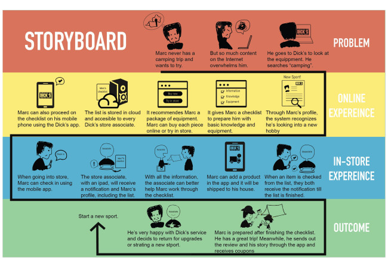
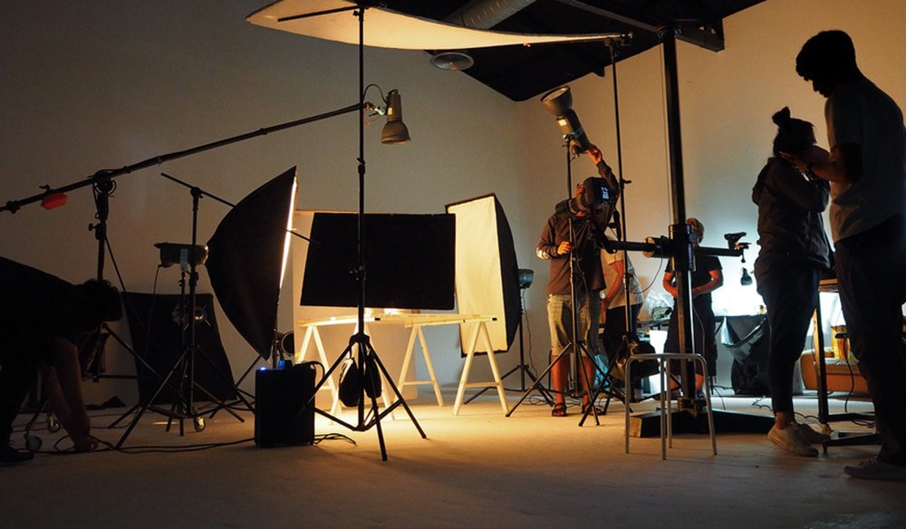
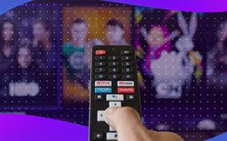

Why Choose Ad Films for Your Brand?
Ad films are the most impactful way to capture attention and leave a lasting impression. Whether for television, cinema, or digital platforms, we produce creative commercials that engage, inspire, and drive results.
Film Making Process

Concept Development
We create powerful ideas and storyboards tailored to your brand message.

Production
High-quality filming with professional equipment and skilled directors.
Post-Production
Editing, visual effects, and sound design for a polished final ad.

Distribution
We help you place ads on TV, cinemas, and digital platforms for maximum reach.
Types of Ad Films We Create
- ✅ Television Commercials (TVCs)
- ✅ Corporate & Branding Films
- ✅ Social Media Video Ads
- ✅ Product Launch & Explainer Videos
- ✅ Animation & Motion Graphics Ads
Bring Your Brand Story to Life
Partner with Star Vision Ads to produce ad films that captivate audiences and boost your brand visibility.